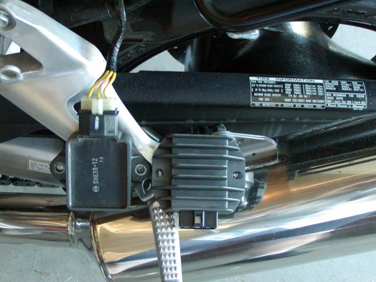
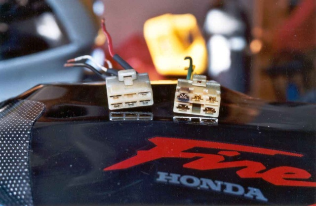
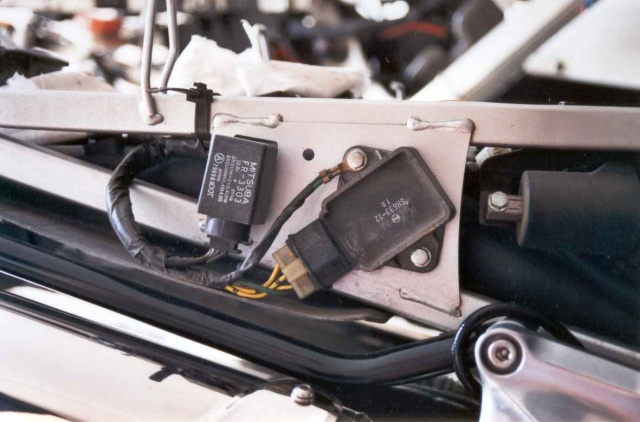
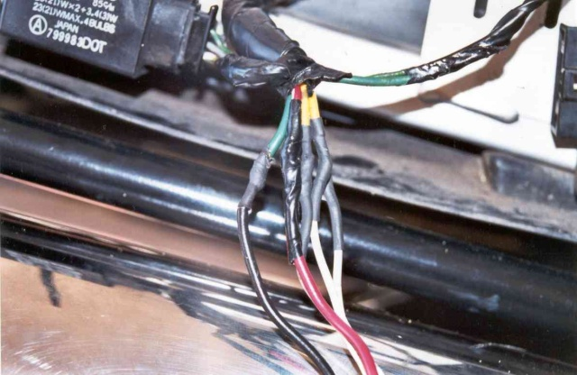
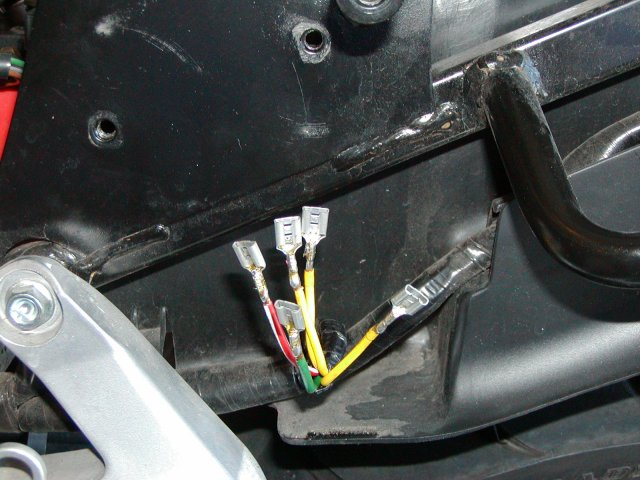
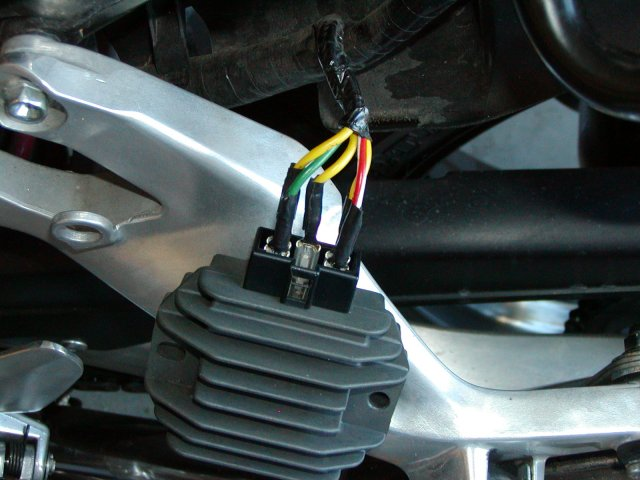
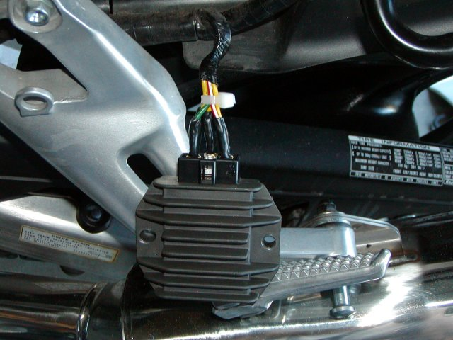
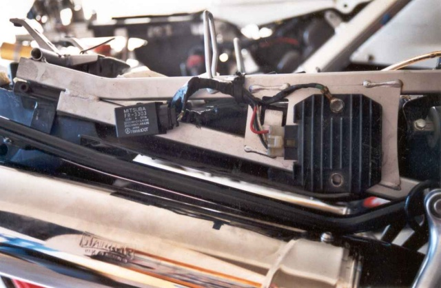
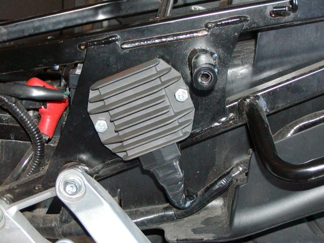

Changing the Honda Reg/Rec
Apart from very poor quality front suspension setups, most Hondas also have another well-known problem - the regulator/rectifier likes to die at very frequent intervals. When it goes, it tends to take other things with it which can make it a very expensive proposition. For almost everyone, they just buy a new Honda item and wire it in - only to have it fail again 35K down the road. This tutorial is to show you how to replace the Honda unit with a non-Honda item: something that won't fail. The general setup is common to all Hondas, but there are some small differences. The photos here are of the conversion done to my VTR1000 and Blackbird, but it should be similar for all Hondas. The VTR photos here were taken by my mate Chris Coote, and the XX pictures come from Scot Mahon.

This is the comparison between the stock Honda-issue r/r on the left and the R1 unit on the right. Notice the complete lack of cooling fins (this generates huge amounts of heat - it produces somewhere around 40amps on the output!). That is one of the primary contributors to the failures - the inability to keep cool, and the resulting heat/cool cycle destroying the semiconductors contained inside.
Note that 2002 and later model blackbirds have a completely different r/r that looks huge. It is mounted on the left side of the subframe rather than the right side for the pre-2002 models. This new item looks really beefy and is far bigger than either the old one or the replacement regulator. I seriously doubt you'd need to replace it.
Knowing when to replace it
Firstly, you need to know what is wrong and why. I wrote a long article on the Blackbird site about How to know if your reg/rec is about to die. In addition, here's a nice photo of the plug going into mine:
It was about to fail big time - notice the black ring around the top left item on the plug on the right. On the left is the new plug to be used.
What to replace it with
There are many options with different rectifiers to replace it with. The first recommendation is to not use anything that comes from Honda. They're crap. Their biggest problem is they are just not capable of producing the current required. What you want to do is put on something that can handle the demands. For this task, we chose a reg/rec from a R1. There's heaps of them around in wreckers, they've got nice big cooling fins (unlike the Honda unit, see below) and the number of wires match up. It really doesn't matter what brand and model you get, so long as you have at least the same current rating as the old unit.

This is the fitment on the left side of the subframe on the VTR. The small box on the left side is the indicator relay for the VTR. That will need to be moved somewhere else as the R1 unit is much bigger.Fitting
Fitting a new reg/rec starts by removing the old one. Chop the leads off about 3cm from the plug. If your wiring is getting crispy, trim longer, but try to cut the old one off as close to the r/r as possible. Next, locate the wiring from the R1 plug. There should be 5 leads coming from it - three white, a red and black.Using a stock connector
To wire up you should match the wires up with the same colour leads. The only difference is that the R1 plug will use white wires, which correspond to the Honda yellow wires. These may be connected in any order - they are just the output of the stator. Note that you must solder the leads together and cover them either with heatshrink or electrical tape. Do not use any sort of crimped endings. There is serious amounts of current going through here and the crimped leads will burn up very quickly.For carbie-fed Hondas, there will only be 5 wires to connect up. Just match colour with colour.

For EFI model Hondas, you will have eight wires, not 5. The DC power leads (red and black) are doubled up for some reason. Just connect the two of them to the corresponding colour lead from the R1 plug. That leaves one other lead, which, according to the Blackbird wiring diagram is blue. This is for sensing starting and if there is another wire (total 9) the other is there for headlight-on sensing. These are there to increase output when the lights are on, and stop charge when starting. They have been proven to NOT help the later bikes with RR failures. You can safely leave this wire unconnected as it is not powered. Just remember to tape over the end and tuck it away so you don't have a loose wire floating around.
When you don't have a connector
If you can't find a connector (the wreckers are unwilling to cut the wiring loom to sell one to you) then it is fine to just put on a bunch of spade connectors directly into the fitting.

When you put the connectors onto the wires, make sure you solder them and put a small amount of heatshrink around each individual connector. To fit the wires to the regulator, put the three yellow wires onto the bottom row - these come from the stator so it doesn't matter which order you put them in. The two power wires go to top row - positive on the left and ground on the right.

Finally, tape everything up so that you can't pull the individual connectors out. I would recomment that you also put a tie-wrap around the wires first before taping, about 3cm away from the solder joints.
Mounting on the bike
Once you have completed the soldering, you need to mount the r/r back on the bike again. Note that the R1 unit is a hell of a lot bigger. It also means the bolt patterns may not line up.
The simplest way to deal with this is to cut the lower of the two bolts off the bike. Just use a single bolt through the top of the unit. Tighten up tight, with the earth lead under it. However, don't use loctite as this will break the electrical contact and your bike won't run for very long at all. If you think the one bolt is not enough, don't worry. We've put a season of racing on it, plus well over 10,000km like that and never had an issue.

For the blackbird, the holes do seem to line up because one of the r/r holes is elongated. If it doesn't quite fit, just take a small circular file to the hole until it does.

Finally tiewrap everything into place. Start the bike up and check the voltage over the battery terminals. You should see between 12.5 and 14.4V depending on revs. If this checks out, fit the bodywork back on the bike and go ride!